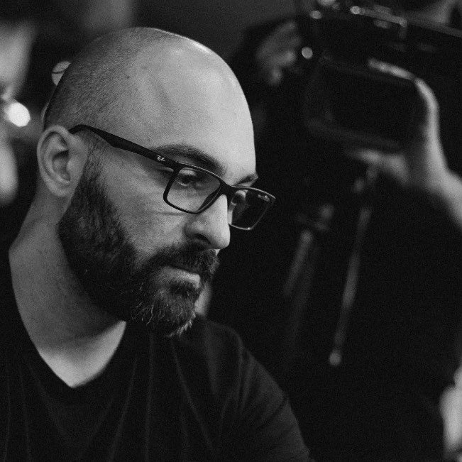

Curriculum Vitae
English Version
Bruno Aurélio Noventa

Brasileiro, 33 anos, casado
Cel. +55 (16) 99309-7030
bruno90cs@hotmail.com
Perfil profissional
Me graduei assim que saí do ensino médio pelo PROUNI, mas nunca quis exercer a faculdade.
Segui trabalhando e construindo minha vida, adquirindo experiência e aprendendo na prática, como é o mercado de trabalho.
Tenho experiência em compras, vendas, administrativo e TI, tanto no comércio como na indústria.
Formação
- Graduação em Publicidade e Propaganda, UNIFRAN - UNIVERSIDADE DE FRANCA (dezembro/2011)
- Curso de inglês, CCAA (maio/2020)
- Técnico em Informática, ETEC Antônio de Pádua Cardoso (julho/2007)
- Cursando Web Development (udemy)
Idiomas
Histórico profissional
Jumil – fevereiro/2021(atual)
obs: Experiência com o sistema Sapiens
Lizote Materiais de Construção - maio/2011 a fevereiro/2021
- Almoxarife - maio/2011
- Vendedor - outubro/2011
- Supervisor de Almoxarifado - outubro/2013
- Comprador - agosto/2018 a fevereiro/2021
obs: Experiência com o sistema Winthor da TOTVS
3D INFOSHOP - de agosto/2008 a outubro/2010
- Técnico em Informática (Manutenção em computadores)